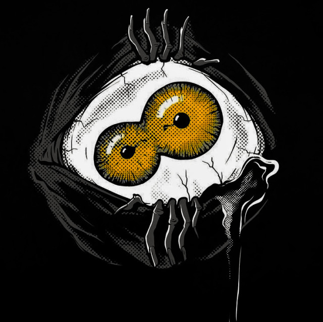
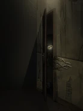
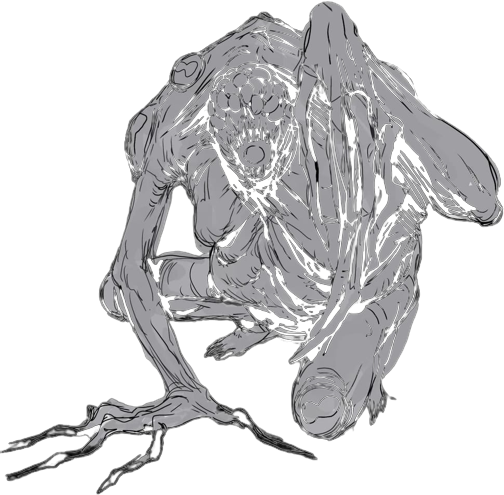

CRIANDO SUSPENSE
╬╬═════════❮◆❯═════════╬╬
Como já dito, ORDEM PARANORMAL RPG é primariamente um jogo de investigação, mistérios,
enigmas e eventos inexplicáveis. Como tal, flerta o tempo inteiro com o suspense. Histórias
de suspense são aquelas nas quais você permanece o tempo todo vidrado na narrativa,
esperando algo acontecer a cada momento. A seguir, algumas dicas para colocar esse elemento
em suas sessões.
Suspense é a antecipação de eventos, geralmente importantes ou perigosos. Portanto, para
criar suspense, é necessário criar antecipação — aquele sentimento de algo pode acontecer a
qualquer momento. Como mestre, você consegue fazer isso através do uso de elementos
recorrentes na narrativa. Imagine uma missão sobre uma série de assassinatos supostamente
cometidos por um fantasma. A missão tem o seguinte briefing:
Os moradores da cidade juram ter visto um fantasma perambulando próximo da biblioteca na
noite em que Dolores Cunha, a bibliotecária, foi encontrada morta em uma das alas menos
visitadas do prédio público. Relatos dos moradores confirmam que as luzes da biblioteca
piscaram diversas vezes antes do fantasma ter sido visto vagando para longe da biblioteca e
em direção a uma fábrica abandonada.
Esse briefing possui elementos que podem ser usados para criar suspense em cenas futuras. As
luzes piscarem podem ser (ou não) um indicativo da chegada do fantasma, por isso sempre que
você descrever que as luzes piscam em uma cena, os jogadores vão pensar que o fantasma está
chegando. E é aqui que você consegue se divertir criando suspense: nem sempre eles vão estar
certos.
O cerne do suspense é a sensação constante de que algo está acontecendo, mas você não tem
todas as peças do quebra-cabeça. Por isso, é importante introduzir elementos recorrentes e
usá-los em diversas cenas, deixando os jogadores tentando adivinhar o que está acontecendo.

CRIANDO TERROR
╬╬═════════❮◆❯═════════╬╬
Terror é associado ao suspense, e isso não é à toa: terror é o mal estar que antecede um evento
ruim. É aquele aperto no peito ao caminhar por uma rua escura sozinho à noite.
Para criar terror, você precisa de um elemento narrativo poderoso, que possa colocar os
personagens em risco. Então, use esse elemento para fazer algo indiretamente ruim a eles. No
exemplo do fantasma, não faça com que a criatura ataque os agentes, pois isso simplesmente
geraria uma cena de ação. Em vez disso, use-o para fazer algo indiretamente ruim a eles, como
matar um NPC querido. Após descobrirem que seu aliado está morto, os jogadores ficarão
adivinhando quando o fantasma vai aparecer novamente, gerando a sensação ruim de que algo
terrível vai acontecer em breve.

CRIANDO HORROR:
╬╬═════════❮◆❯═════════╬╬
Por fim, temos o horror. Enquanto o terror é sofrimento por antecipação, o horror é sofrimento
no presente. Horror é a repulsa por presenciar algo terrível. Geralmente, está associado a
violência extrema, com exposição de elementos pesados.
Chegar no horror é uma escolha do grupo. Alguns jogadores preferem manter o jogo mais leve,
enquanto outros não se importam de mergulhar no horror. Se os seus jogadores pertencerem ao
segundo grupo, você poderá se soltar nas descrições (mesmo assim, pare se notar que algum
jogador está incomodado). Para gerar horror, incorpore essas dicas em suas descrições
